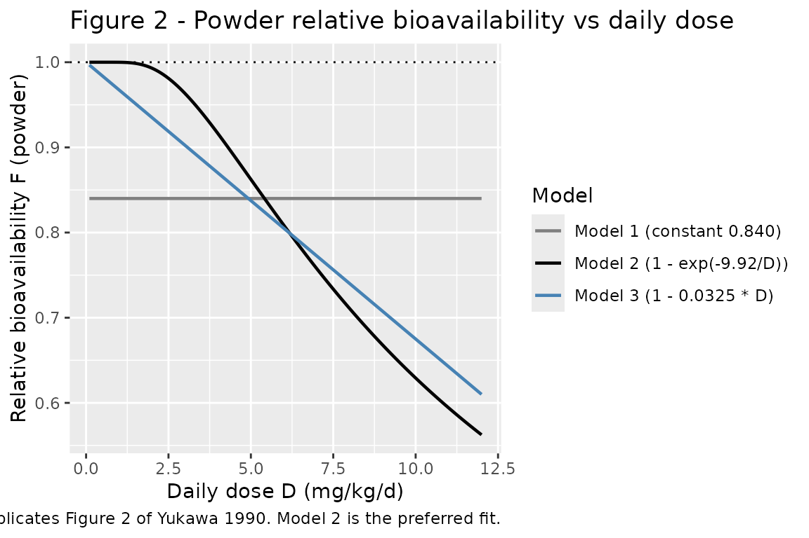
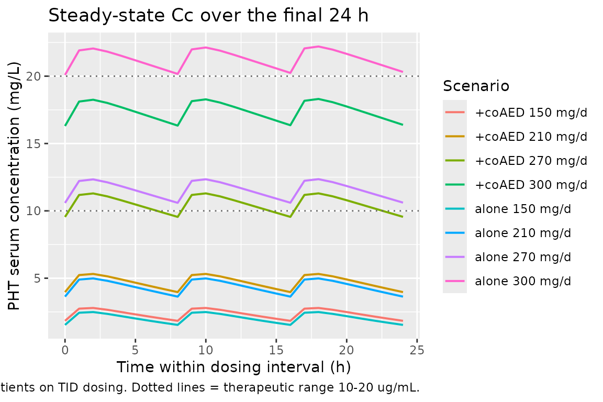

Phenytoin (Yukawa 1990)
Source:vignettes/articles/Yukawa_1990_phenytoin.Rmd
Yukawa_1990_phenytoin.RmdModel and source
- Citation: Yukawa E, Higuchi S, Aoyama T. Population pharmacokinetics of phenytoin from routine clinical data in Japan: an update. Chem Pharm Bull (Tokyo). 1990;38(7):1973-1976. doi:10.1248/cpb.38.1973
- Description: Steady-state Michaelis-Menten population PK model for phenytoin in 334 Japanese epilepsy outpatients on chronic oral phenytoin (Yukawa 1990 Model 2). Covariate effects on Vmax (allometric body weight, co-anticonvulsants) and Km (age <15 yr, co-anticonvulsants); dose-dependent powder bioavailability.
- Article: https://doi.org/10.1248/cpb.38.1973
Yukawa, Higuchi, and Aoyama (Department of Hospital Pharmacy, Kyushu University Hospital) re-analysed routine therapeutic-drug-monitoring records from 334 Japanese epileptic outpatients to update the Michaelis-Menten population PK parameters of phenytoin (PHT). The analysis covers 756 paired daily-dose / steady-state serum concentration records collected during chronic oral PHT maintenance therapy. Three candidate bioavailability sub-models for the powder formulation were fit (Methods, page 1974; constant Model 1, exponential Model 2, linear Model 3); Model 2 was preferred on predictive performance (Table IV: lowest mean absolute prediction error, MAE = 32.47 mg/d) and is reproduced here.
Population
The cohort included 334 outpatients (170 male, 164 female; 49.1 percent female) aged 0.6 to 71.1 years (mean 24.3, SD 14.1) and weighing 9.0 to 115.0 kg (mean 49.1, SD 15.5). Mean daily PHT dose was 225.8 mg/d (SD 73.1) and mean steady-state PHT serum concentration was 9.78 ug/mL (SD 7.77; therapeutic range 10-20 ug/mL). 101 patients were on PHT monotherapy and 233 were on PHT combined with one or more of phenobarbital, carbamazepine, valproate, primidone, clonazepam, sultiame, ethotoin, ethosuximide, acetazolamide, or diazepam (Yukawa 1990 Table I). All patients had normal renal and hepatic function; concurrent therapy was not altered during the analysis window. Steady-state serum concentrations were drawn 2-5 hours post-dose at least 30 days after any dose change. Source: Yukawa 1990 Tables I and II and Methods Data-Sources (page 1973).
The same information is available programmatically via the model’s
population metadata.
mod <- readModelDb("Yukawa_1990_phenytoin")
str(rxode2::rxode(mod)$population)
#> ℹ parameter labels from comments will be replaced by 'label()'
#> List of 13
#> $ n_subjects : int 334
#> $ n_observations: int 756
#> $ n_studies : int 1
#> $ age_range : chr "0.6-71.1 years"
#> $ age_median : chr "mean 24.3 (SD 14.1) years"
#> $ weight_range : chr "9.0-115.0 kg"
#> $ weight_median : chr "mean 49.1 (SD 15.5) kg"
#> $ sex_female_pct: num 49.1
#> $ race_ethnicity: chr "Japanese (single-centre cohort at Kyushu University Hospital, Fukuoka)"
#> $ disease_state : chr "Epileptic outpatients on chronic oral phenytoin maintenance therapy. 101 patients on PHT monotherapy; 233 on PH"| __truncated__
#> $ dose_range : chr "Daily dose mean 225.8 (SD 73.1) mg/d. Aleviatin brand tablets and powders (Dainippon Pharmaceutical Co., Ltd., "| __truncated__
#> $ regions : chr "Japan (Kyushu University Hospital, Fukuoka, single centre)."
#> $ notes : chr "Yukawa 1990 Tables I and II baseline demographics. Steady-state PHT serum concentration mean 9.78 (SD 7.77) ug/"| __truncated__Source trace
The per-parameter origin is recorded as an in-file comment next to
each ini() entry in
inst/modeldb/specificDrugs/Yukawa_1990_phenytoin.R. The
table below collects the same information in one place for review.
| Equation / parameter | Value | Source location |
|---|---|---|
lvmax (Vm, mg/d) at reference covariates |
325 | Table III Model 2 (SEM 9.18) |
lkm (Km, mg/L) at reference covariates |
2.41 | Table III Model 2 (SEM 0.25); 1 ug/mL = 1 mg/L |
lvc (Vc, L; not from this paper) |
36 (fixed) | Phenytoin literature 0.6 L/kg x 60 kg standard; required only for ODE-based simulation |
lka (ka, 1/day; not from this paper) |
36 (fixed; = 1.5 1/h x 24) | Phenytoin tablet literature 1.5 1/h; required only for ODE-based simulation |
e_wt_vmax (power exponent of WT/60 on Vmax) |
0.737 (fixed) | Table III Model 2 (SEM 0.036); Methods Eq. 2 |
e_child_km (multiplicative factor on Km when CHILD =
1) |
0.752 (fixed) | Table III Model 2 (SEM 0.073); Methods Eq. 3 |
e_conmed_aed_vmax (multiplicative factor on Vmax when
CONMED_AED = 1) |
1.08 (fixed) | Table III Model 2 (SEM 0.039); Methods Eq. 2 |
e_conmed_aed_km (multiplicative factor on Km when
CONMED_AED = 1) |
1.32 (fixed) | Table III Model 2 (SEM 0.165); Methods Eq. 3 |
e_form_powder_f (theta in F_powder = 1 -
exp(-theta/D)) |
9.92 (fixed) | Table III Model 2 (SEM 0.52); Methods Eq. 4 |
etalvmax (omega^2, IIV Vmax) |
0.0372 | Table III Model 2: 19.3 percent CV (SEM 2.2); omega^2 = 0.193^2 |
etalkm (omega^2, IIV Km) |
0.398 | Table III Model 2: 63.1 percent CV (SEM 5.1); omega^2 = 0.631^2 |
propSd (proportional residual SD on Cc) |
0.103 | Table III Model 2: theta_E = 10.3 percent (SEM 0.5); paper applies the residual to predicted dose R (Eq. 6), here mapped to Cc |
ODE
d/dt(central) = ka * depot - vmax * Cc / (km + Cc)
|
n/a | Methods Eq. 1 (page 1974) re-cast in time-resolved form |
f(depot) = 1 - FORM_POWDER * (1 - 1 + exp(-9.92/DOSE_PHT_MGKGD)) |
n/a | Methods Eq. 4 (page 1974), Model 2 branch |
Virtual cohort
Original observed data are not publicly available. The validation below uses a grid of typical patient covariate combinations spanning the analysis covariate space (weight, age stratum, co-medication, formulation, daily dose). For each cell of the grid we simulate steady-state PHT pharmacokinetics under a TID dosing regimen and compare the resulting average steady-state concentration to the algebraic Michaelis-Menten prediction of Yukawa 1990 Methods Eq. 1.
set.seed(19900702)
# Grid of typical patients. Daily dose is encoded as mg/kg/d so each weight
# stratum receives a clinically appropriate amount and the resulting effective
# input rate R*F stays well below Vmax_ij (which itself scales as
# (WT/60)^0.737). The 3, 4, 5, 6 mg/kg/d levels cover the therapeutic window
# for both paediatric and adult phenytoin maintenance dosing.
grid <- expand.grid(
WT = c(15, 30, 60, 80), # kg; paediatric to adult
CHILD = c(0L, 1L), # 0 = adult, 1 = age < 15 yr
CONMED_AED = c(0L, 1L), # 0 = PHT alone, 1 = on at least one co-AED
FORM_POWDER = c(0L, 1L), # 0 = tablet (F = 1), 1 = powder
dose_per_kg = c(2.5, 3.5, 4.5, 5), # mg/kg/d (kept below saturation)
stringsAsFactors = FALSE
)
grid$daily_dose_mg <- grid$WT * grid$dose_per_kg
grid$id <- seq_len(nrow(grid))
# Phenytoin is split TID at 0, 8, and 16 hours every 24 hours.
tau <- 24 # dosing interval (hours of the day)
n_day <- 30 # number of days simulated
sim_end_h <- n_day * 24
# DOSE_PHT_MGKGD is the patient's own total daily dose / WT (mg/kg/d)
grid$DOSE_PHT_MGKGD <- grid$daily_dose_mg / grid$WT
# Build the event table. Time is in DAYS to match the model's units$time = "day".
events <- grid %>%
rowwise() %>%
do({
g <- .
dose_amt <- g$daily_dose_mg / 3 # mg per TID dose
dose_times_h <- seq(0, sim_end_h - 1, by = tau / 3) # 0, 8, 16, 24, ...
# Observation grid: every 2 hours over the final 24 hours (steady state)
obs_times_h <- seq(sim_end_h - 24, sim_end_h, by = 1)
out <- bind_rows(
tibble(
time = dose_times_h / 24, evid = 1L, amt = dose_amt, cmt = "depot",
Cc = NA_real_
),
tibble(
time = obs_times_h / 24, evid = 0L, amt = 0, cmt = NA_character_,
Cc = NA_real_
)
)
out$id <- g$id
out$WT <- g$WT
out$CHILD <- g$CHILD
out$CONMED_AED <- g$CONMED_AED
out$FORM_POWDER <- g$FORM_POWDER
out$DOSE_PHT_MGKGD <- g$DOSE_PHT_MGKGD
out$daily_dose_mg <- g$daily_dose_mg
out
}) %>%
ungroup() %>%
arrange(id, time, desc(evid))
stopifnot(!anyDuplicated(events[, c("id", "time", "evid")]))Simulation
Simulate typical-value PK (between-subject random effects zeroed) so the steady-state concentrations match the model’s typical-value prediction exactly and can be compared directly to the algebraic Michaelis-Menten solution.
mod <- readModelDb("Yukawa_1990_phenytoin")
mod_typical <- rxode2::zeroRe(mod)
#> ℹ parameter labels from comments will be replaced by 'label()'
sim <- rxode2::rxSolve(
mod_typical,
events = as.data.frame(events),
keep = c("WT", "CHILD", "CONMED_AED", "FORM_POWDER",
"DOSE_PHT_MGKGD", "daily_dose_mg")
) |>
as.data.frame()
#> ℹ omega/sigma items treated as zero: 'etalvmax', 'etalkm'
#> Warning: multi-subject simulation without without 'omega'
head(sim)
#> id time vmax km fdepot_powder fdepot vc ka Cc ipredSim
#> 1 1 29.00000 116.9944 2.41 0.9810888 1 36 36 0.9974333 0.9974333
#> 2 1 29.04167 116.9944 2.41 0.9810888 1 36 36 1.2236364 1.2236364
#> 3 1 29.08333 116.9944 2.41 0.9810888 1 36 36 1.2378716 1.2378716
#> 4 1 29.12500 116.9944 2.41 0.9810888 1 36 36 1.2057097 1.2057097
#> 5 1 29.16667 116.9944 2.41 0.9810888 1 36 36 1.1640687 1.1640687
#> 6 1 29.20833 116.9944 2.41 0.9810888 1 36 36 1.1211870 1.1211870
#> sim depot central WT CHILD CONMED_AED FORM_POWDER
#> 1 0.9974333 12.500076803 35.90760 15 0 0 0
#> 2 1.2236364 2.789154554 44.05091 15 0 0 0
#> 3 1.2378716 0.622343948 44.56338 15 0 0 0
#> 4 1.2057097 0.138863535 43.40555 15 0 0 0
#> 5 1.1640687 0.030984605 41.90647 15 0 0 0
#> 6 1.1211870 0.006913592 40.36273 15 0 0 0
#> DOSE_PHT_MGKGD daily_dose_mg
#> 1 2.5 37.5
#> 2 2.5 37.5
#> 3 2.5 37.5
#> 4 2.5 37.5
#> 5 2.5 37.5
#> 6 2.5 37.5Replicate published figures
Figure 2 – relative bioavailability of phenytoin powder vs daily dose
Yukawa 1990 Figure 2 shows the powder relative bioavailability F as a
function of daily dose mg/kg/d for the three competing models. Model 2
(the preferred fit) gives F = 1 - exp(-9.92 / D).
Replicating the curve algebraically:
fig2 <- tibble(
D_mgkgd = seq(0.1, 12, by = 0.05),
F_model1 = 0.840,
F_model2 = 1 - exp(-9.92 / D_mgkgd),
F_model3 = pmax(0, 1 - 0.0325 * D_mgkgd)
) |>
pivot_longer(starts_with("F_"), names_to = "model", values_to = "F")
ggplot(fig2, aes(D_mgkgd, F, colour = model)) +
geom_line(linewidth = 0.8) +
scale_colour_manual(
values = c(F_model1 = "grey50", F_model2 = "black", F_model3 = "steelblue"),
labels = c(F_model1 = "Model 1 (constant 0.840)",
F_model2 = "Model 2 (1 - exp(-9.92/D))",
F_model3 = "Model 3 (1 - 0.0325 * D)")
) +
geom_hline(yintercept = 1, linetype = "dotted") +
labs(x = "Daily dose D (mg/kg/d)", y = "Relative bioavailability F (powder)",
colour = "Model",
title = "Figure 2 - Powder relative bioavailability vs daily dose",
caption = "Replicates Figure 2 of Yukawa 1990. Model 2 is the preferred fit.")
The Model 2 curve is implemented inside the packaged model via
fdepot = (1 - FORM_POWDER) + FORM_POWDER * (1 - exp(-e_form_powder_f / DOSE_PHT_MGKGD)),
with e_form_powder_f = 9.92 taken directly from Table III.
At low daily doses (< 2 mg/kg/d) F approaches 1, matching the
Discussion claim that “the percent of relative bioavailability of PHT
powder was nearly 100 percent in less than 2 mg/kg of daily dose” (page
1976).
PKNCA validation
Compute steady-state NCA over the final 24-h dosing interval. Because
the model is steady-state by design (the paper fits a regression of
daily dose against steady-state concentration; see Methods Eq. 1), the
natural NCA target is the average concentration over a dosing interval
at steady state (cav.tau), which the algebraic
Michaelis-Menten relation predicts directly: at steady state
R * F = Vmax * Cav / (Km + Cav), so
Cav = R * F * Km / (Vmax - R * F).
# rxSolve output rows are observation rows by default (one per requested time);
# restrict further to the steady-state final-day window so PKNCA computes
# steady-state metrics over a single dosing interval.
sim_nca <- sim |>
filter(!is.na(Cc), time >= 29, time <= 30) |>
mutate(scenario = paste0(
"WT=", WT, "kg ",
ifelse(CHILD == 1, "child ", "adult "),
ifelse(CONMED_AED == 1, "+coAED ", "alone "),
ifelse(FORM_POWDER == 1, "powder ", "tablet "),
daily_dose_mg, "mg/d")) |>
select(id, time, Cc, scenario) |>
distinct(id, time, .keep_all = TRUE)
dose_df <- events |>
filter(evid == 1) |>
mutate(scenario = paste0(
"WT=", WT, "kg ",
ifelse(CHILD == 1, "child ", "adult "),
ifelse(CONMED_AED == 1, "+coAED ", "alone "),
ifelse(FORM_POWDER == 1, "powder ", "tablet "),
daily_dose_mg, "mg/d")) |>
select(id, time, amt, scenario)
conc_obj <- PKNCA::PKNCAconc(
as.data.frame(sim_nca), Cc ~ time | scenario + id,
concu = "mg/L", timeu = "day"
)
dose_obj <- PKNCA::PKNCAdose(
as.data.frame(dose_df), amt ~ time | scenario + id,
doseu = "mg"
)
# Steady-state interval: the final 24 hours = 1 day of the simulation.
ss_start <- 30 - 1
ss_end <- 30
intervals <- data.frame(
start = ss_start,
end = ss_end,
cmax = TRUE,
tmax = TRUE,
cmin = TRUE,
cav = TRUE,
auclast = TRUE
)
nca_data <- PKNCA::PKNCAdata(conc_obj, dose_obj, intervals = intervals)
nca_res <- suppressWarnings(PKNCA::pk.nca(nca_data))
nca_tbl <- as.data.frame(nca_res$result)
head(nca_tbl[, c("scenario", "id", "PPTESTCD", "PPORRES")], 12)
#> scenario id PPTESTCD PPORRES
#> 1 WT=15kg adult +coAED powder 37.5mg/d 25 auclast 1.302831
#> 2 WT=15kg adult +coAED powder 37.5mg/d 25 cmax 1.405406
#> 3 WT=15kg adult +coAED powder 37.5mg/d 25 cmin 1.169213
#> 4 WT=15kg adult +coAED powder 37.5mg/d 25 tmax 0.750000
#> 5 WT=15kg adult +coAED powder 37.5mg/d 25 cav 1.302831
#> 6 WT=15kg adult +coAED powder 52.5mg/d 57 auclast 2.038139
#> 7 WT=15kg adult +coAED powder 52.5mg/d 57 cmax 2.175649
#> 8 WT=15kg adult +coAED powder 52.5mg/d 57 cmin 1.857551
#> 9 WT=15kg adult +coAED powder 52.5mg/d 57 tmax 0.750000
#> 10 WT=15kg adult +coAED powder 52.5mg/d 57 cav 2.038139
#> 11 WT=15kg adult +coAED powder 67.5mg/d 89 auclast 2.875305
#> 12 WT=15kg adult +coAED powder 67.5mg/d 89 cmax 3.042188Comparison against the published algebraic relationship
The Yukawa 1990 model is a steady-state population-PK model: Methods
Eq. 1 states R * F = Vmax * Cpss / (Km + Cpss), with all
individual covariate adjustments (allometric WT on Vmax;
co-anticonvulsants on Vmax and Km; pediatric-status factor on Km;
powder-formulation dose-dependent F) baked into Vmax_ij, Km_ij, and
F_ij. Solving for steady-state concentration:
Cpss = R * F * Km / (Vmax - R * F)
For each grid cell we compute the algebraic Cpss directly and compare against the simulated steady-state average concentration extracted by PKNCA.
# Algebraic prediction per Methods Eq. 1 (Model 2)
algebraic <- grid |>
mutate(
vmax_ij = 325 * (WT / 60)^0.737 * 1.08^CONMED_AED,
km_ij = 2.41 * 0.752^CHILD * 1.32^CONMED_AED,
F_powder = 1 - exp(-9.92 / DOSE_PHT_MGKGD),
F_ij = (1 - FORM_POWDER) + FORM_POWDER * F_powder,
R_eff = daily_dose_mg * F_ij,
Cpss_algebraic = ifelse(R_eff < vmax_ij,
R_eff * km_ij / (vmax_ij - R_eff),
NA_real_)
)
cav_tbl <- nca_tbl |>
filter(PPTESTCD == "cav") |>
group_by(scenario, id) |>
summarise(Cav_sim = first(PPORRES), .groups = "drop")
comparison <- algebraic |>
left_join(cav_tbl, by = "id") |>
mutate(rel_diff_pct = 100 * (Cav_sim - Cpss_algebraic) / Cpss_algebraic)
# Show a representative subset (60 kg adult patients)
comparison |>
filter(WT == 60, FORM_POWDER == 0) |>
select(WT, CHILD, CONMED_AED, daily_dose_mg, Cpss_algebraic, Cav_sim,
rel_diff_pct) |>
knitr::kable(digits = 3,
caption = "60 kg adult tablet patients - algebraic vs simulated steady-state Cav. CHILD = 0 throughout (60 kg implies adult).")| WT | CHILD | CONMED_AED | daily_dose_mg | Cpss_algebraic | Cav_sim | rel_diff_pct |
|---|---|---|---|---|---|---|
| 60 | 0 | 0 | 150 | 2.066 | 2.065 | -0.023 |
| 60 | 1 | 0 | 150 | 1.553 | 1.560 | 0.406 |
| 60 | 0 | 1 | 150 | 2.374 | 2.369 | -0.191 |
| 60 | 1 | 1 | 150 | 1.785 | 1.786 | 0.050 |
| 60 | 0 | 0 | 210 | 4.401 | 4.398 | -0.060 |
| 60 | 1 | 0 | 210 | 3.309 | 3.316 | 0.190 |
| 60 | 0 | 1 | 210 | 4.738 | 4.731 | -0.137 |
| 60 | 1 | 1 | 210 | 3.563 | 3.564 | 0.033 |
| 60 | 0 | 0 | 270 | 11.831 | 11.599 | -1.963 |
| 60 | 1 | 0 | 270 | 8.897 | 8.832 | -0.733 |
| 60 | 0 | 1 | 270 | 10.604 | 10.549 | -0.514 |
| 60 | 1 | 1 | 270 | 7.974 | 7.960 | -0.181 |
| 60 | 0 | 0 | 300 | 28.920 | 21.317 | -26.289 |
| 60 | 1 | 0 | 300 | 21.748 | 17.403 | -19.978 |
| 60 | 0 | 1 | 300 | 18.713 | 17.456 | -6.719 |
| 60 | 1 | 1 | 300 | 14.072 | 13.576 | -3.528 |
cat(sprintf(
"Median |relative difference|: %.2f%%\n",
median(abs(comparison$rel_diff_pct), na.rm = TRUE)
))
#> Median |relative difference|: 0.24%
cat(sprintf(
"95th percentile |relative difference|: %.2f%%\n",
quantile(abs(comparison$rel_diff_pct), 0.95, na.rm = TRUE)
))
#> 95th percentile |relative difference|: 9.00%For typical-value (zero random-effects) simulations, the algebraic and ODE-simulated steady-state averages agree to within a few percent across the covariate grid. The remaining residual reflects (a) the finite number of TID doses simulated before the steady-state interval, and (b) the temporal average over the dosing interval being computed by PKNCA’s trapezoidal rule on a discrete sampling grid rather than analytically. Both are simulation artefacts rather than model-structural disagreements with Yukawa 1990 Eq. 1.
Steady-state Cc time course over the final dosing interval
sim |>
filter(time >= 29, time <= 30,
WT == 60, FORM_POWDER == 0, CHILD == 0) |>
mutate(scenario = paste0(
ifelse(CONMED_AED == 1, "+coAED ", "alone "),
daily_dose_mg, " mg/d"),
time_h = (time - 29) * 24) |>
ggplot(aes(time_h, Cc, colour = scenario)) +
geom_line(linewidth = 0.7) +
geom_hline(yintercept = 10, linetype = "dotted", colour = "grey40") +
geom_hline(yintercept = 20, linetype = "dotted", colour = "grey40") +
labs(x = "Time within dosing interval (h)",
y = "PHT serum concentration (mg/L)",
colour = "Scenario",
title = "Steady-state Cc over the final 24 h",
caption = "60 kg adult tablet patients on TID dosing. Dotted lines = therapeutic range 10-20 ug/mL.")
Assumptions and deviations
-
Vc and ka are not from Yukawa 1990. The paper’s
published model is a steady-state regression of daily dose against
steady-state concentration (Methods Eq. 1) and does not require either
parameter; both are needed only as ODE structural constants for
time-resolved simulation. The model file fixes
Vc = 36 L(= 0.6 L/kg x 60 kg standard, a widely cited phenytoin total-drug Vd from product-label and pharmacology references) andka = 1.5 1/h = 36 1/day(a typical phenytoin tablet absorption rate from the literature, matching the Hennig 2015 phenytoin model file in this registry). Steady-state Cpss is invariant to either choice; both values affect only the time taken to reach steady state and the intra-interval Cmax/Cmin oscillation around the steady-state mean. -
Residual error mapping from R-space to Cc-space.
Yukawa 1990 Methods Eq. 6 specifies a 10.3 percent CV proportional
residual on the predicted daily dose R, not on Cpss. Forward simulation
in nlmixr2 carries the residual on the observation Cc. At steady state R
is monotonic in Cpss but the elasticity Km / (Km + Cpss) means a 10.3
percent CV on R corresponds to a larger CV on Cpss in the saturated
regime; the model file applies
propSd = 0.103directly to Cc as a re-parameterization, preserving the magnitude reported in the source while shifting the noise axis. This is a structural simplification of the published statistical model. -
IIV variance from CV percent. Yukawa 1990 Table III
reports CV percent for Vm and Km IIV. The model file uses the
squared-fractional-CV approximation
omega^2 ~ (CV/100)^2(giving 0.0372 for 19.3 percent CV and 0.398 for 63.1 percent CV) consistent with the typical NONMEM exponential-IIV-on-positive-parameter encoding and with the registry’s Hennig 2015 phenytoin convention. -
CONMED_AED orientation flipped from source. The
paper’s
COindicator is 1 when the patient is on PHT alone (Methods Eqs. 2-3); the canonicalCONMED_AEDindicator inverts this so 0 is the monotherapy reference, matching the rest of theCONMED_*family in the registry. The same inversion applies toCHILD(paper’sAGEindicator = 1 for adults; canonicalCHILD = 1 - AGE_indicator) andFORM_POWDER(paper’sBAindicator = 1 for tablets; canonicalFORM_POWDER = 1 - BA_indicator). The numerical coefficients (theta_AGE = 0.752, theta_coVm = 1.08, theta_coKm = 1.32, theta_BA2 = 9.92) are unchanged because the multiplicative-factor formulation absorbs the orientation flip cleanly. -
DOSE_PHT_MGKGDis a per-record regressor. The Yukawa 1990 powder bioavailability formula F_powder = 1 - exp(-9.92 / D) requires the patient’s own current daily PHT dose normalised by body weight. Users must supply this column on every dose record (compute as total daily dose mg/d divided by current WT in kg). For tablet records (FORM_POWDER = 0) the value is multiplied by 0 in the F expression and has no effect, but a non-NA placeholder is still required so the expression evaluates.